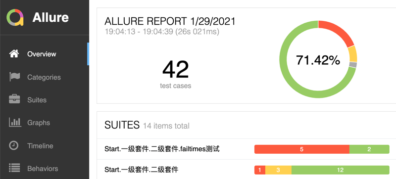

MTF测试框架
主要特点
- 兼容pytest、nose、unittest等已有的python测试框架，零迁移成本
- 数据驱动支持，可以支持常见数据（yaml、json、xml、word、pdf等格式）的加载，支持参数化、正交法、笛卡尔积等数据组合方法
- 关键字驱动支持，可以使用关键字调用调用已有的各种自动化测试框架，无需封装即可服用业界已有的测试能力。
- 模型驱动支持，支持基于page object model的业务用例与自动化技术解耦的设计方法，可以让用例更易于维护。
- 智能测试支持，可以分析自身测试执行逻辑，给出测试场景遗漏分析。
框架特性
兼容pytest
mtf兼容pytest、unittest、nose等传统基于编程方式的测试框架，原有的用例无须迁移即可运行。 随着项目复杂性上升，直接使用python编写大量的测试用例会导致用例的维护成本变高，如下问题会变得更加突出。
- 依赖于python编程能力，需要具备一定编程门槛，项目规模越大，对工程管理能力要求就越高。
- pytest的参数化机制在维护数据方面不方便，无法维护复杂数据。
- pytest的套件管理很弱，无法维护复杂的用例编排。
- pytest的并行机制不成熟，默认框架只支持串行，官方提供的并行插件问题很多不易于使用。
pytest适合单元测试以及简单的自动化测试场景，高阶的测试特性支持较弱。 为了解决复杂场景的测试问题，mtf做了更多的测试特性支持。
数据驱动
使用yaml格式的数据直接编写用例，简单易用，对数据的维护非常友好，yaml可以方便的维护复杂数据。
test_pass:
- assert: [ 1, 1 ]
支持参数化测试
#基本参数化，1对1组合，词典风格数据
test_params_pass2:
- params:
username: [ a, b ]
password: [ a, b ]
- eq: [ "${username}", $(password) ]
#另外一种列表风格的写法，不进行组合，直接固定数据
test_params_pass3:
- params:
- username: a
password: a
- username: b
password: b
- eq: [ "${username}", $(password) ]
测试数据生成支持正交、笛卡尔积等数据生成方法
#正交法生成数据并参数化用例
test_params_正交:
- params:
username: [ u1, u2, u3 ]
password: [ p1, p2 ]
email: [ 1, 2, 3, 4 ]
- log: "${username}"
- log: "${password}"
关键字驱动
在数据驱动的基础上，增加了关键字驱动。
#支持调用python的标准库方法，会自动导入
test_std_method:
- random.random: [ ]
- time.sleep: 0.1
- print: [ "demo print test" ]
- print: "one line"
mtf可以在数据中编写关键字去调用python的任意方法，无需借助插件支持。 避免了像robotframework那样必须依赖与第三方的插件开发，这样可以测试工程师直接复用任何已有的测试框架api。
#接口测试用例，不用封装只要有api就可以直接实现测试
test_requests:
- requests.get:
url: https://ceshiren.com/categories.json
- return_to: r
- jsonpath.jsonpath: [ $(r.json()), '$..id' ]
- return_to: d
- assert: $(54 in d)
模型驱动
支持POM(page object model)模式，可以实现业务测试用例与具体的UI自动化、接口自动化等具体自动化技术解耦。 让测试用例可以更贴近业务场景，更易于维护。
test_sum_good:
- params:
a: [ 1, 3 ]
b: [ 2, 3 ]
sum_expect: [ 3, 6 ]
div_expect: [ 0.5, 1 ]
#初始化po类
- page_object: [ ]
- return_to: po
#调用po方法，不传参数就代表从当前环境里取值
- po.sum_demo: [ ]
- assert: [ $(self._return()), $(sum_expect) ]
智能测试
基于数据驱动可以实现让测试用例实现分析测试用例自身。可以分析套件的执行
可以分析测试用例的执行并给出逻辑路径遗漏分析。
测试报告
提供兼容junit.xml风格的测试报告，用于自动化与持续集成的结果分析。 提供易读性高的allure测试报告，方便测试工程师分析。
